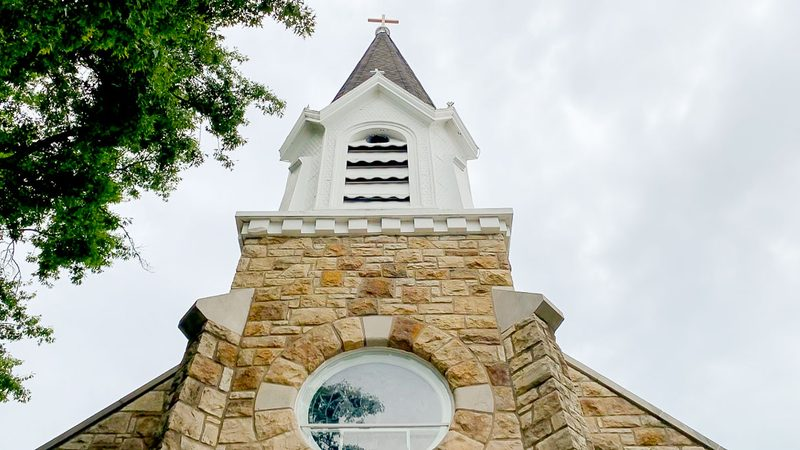
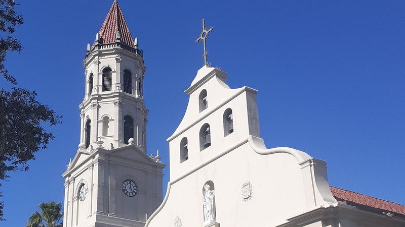
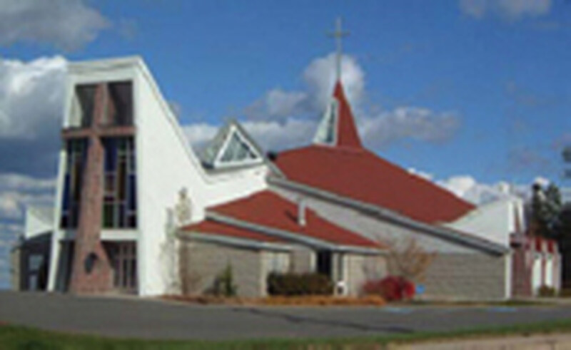
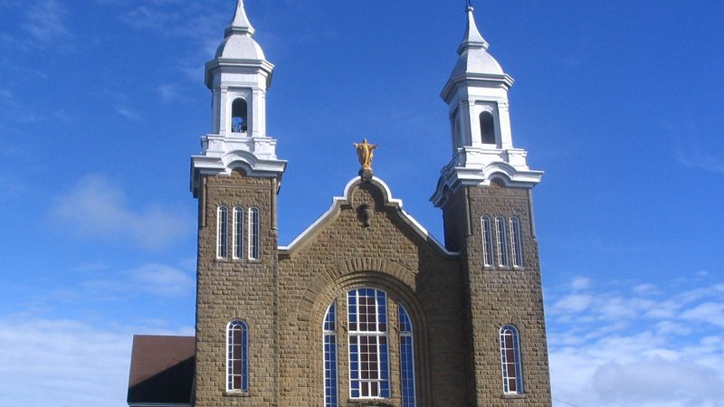
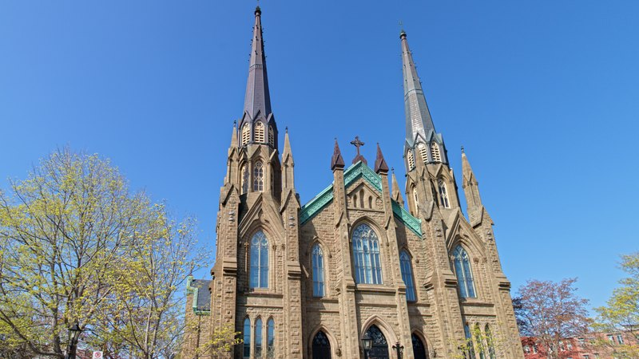
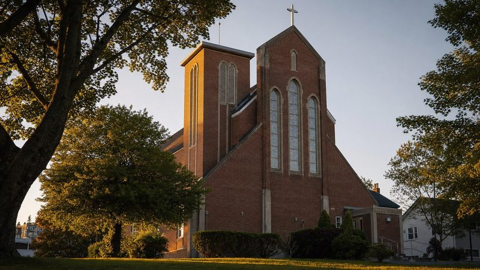
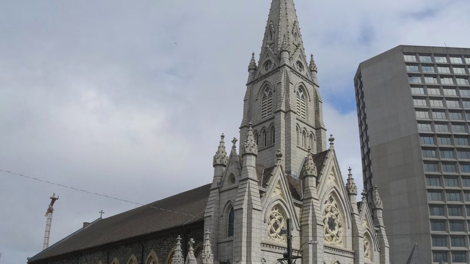

O sítio paroquial pertence à paróquia.
12 paróquias em quatro países, um único cânone de design, nove línguas. Alojamento local. Sem rastreamento. Sem publicidade. Nenhum predador de terceiros. Todo o dinheiro fica na comunidade.
Escolha uma paróquia para entrar no seu sítio. Todo sítio paroquial partilha o mesmo cânone EVE Glyph Design, de modo que a navegação e a tipografia permanecem familiares. O sítio oficial de cada paróquia continua a ser a fonte da verdade — este é um espelho preparado com cuidado, pronto a ser entregue ao voluntário informático já existente da paróquia sempre que ela o quiser.
Estados Unidos
Lenexa, Kansas, e St. Augustine, Florida.


Holy Trinity — Lenexa
Paróquia de origem do Conselho Palmas #6673 dos Cavaleiros de Colombo.
Fundada em 1979 · Arquidiocese de Kansas City no Kansas · Conselho Palmas #6673, Cavaleiros de Colombo

Cathedral Basilica of St. Augustine
St. Augustine, Florida · 38 Cathedral Place
A mais antiga comunidade católica no continente dos Estados Unidos. Aqui celebra-se Missa desde o ano de 1565.
Comunidade 1565 · Igreja atual 1793–1797 · Basílica menor 1976 · Diocese de St. Augustine
Montréal
Aquela na montanha.

Atlantic Canada
New Brunswick, Prince Edward Island, Nova Scotia.
St. Dunstan's — Fredericton
Fredericton, New Brunswick · 120 Regent Street
Paróquia fundadora da Fredericton católica, e primeira catedral de New Brunswick.
Sacerdote residente 1827 · Primeira catedral de New Brunswick 1843 · Igreja atual 1965 · Diocese de Saint John


Sainte-Anne-des-Pays-Bas
Fredericton, Nouveau-Brunswick · 715 rue Priestman
Paróquia francófona fundada no ano de 1981. Espelho não oficial sob a doutrina EVE Glyph.
Paróquia fundada em 1981 · Igreja 2001 · Arquidiocese de Moncton


Saint-Augustin de Paquetville
Paróquia acadiana da vila de Paquetville, património familiar dos Thériault.


St. Dunstan's Basilica
Charlottetown, Prince Edward Island · 65 Great George Street
Igreja-mãe da Diocese de Charlottetown. Fundada no ano de 1816.
Paróquia 1816 · Catedral 1829 · Incêndio 1913 · Igreja atual 1919 · Basílica 1929 · Sítio Histórico Nacional 1990


Saint Catherine of Siena
Casa dos Franciscanos de Halifax. Servindo a região ocidental de Halifax desde o ano de 1948.


St. Mary's Cathedral Basilica
Igreja-mãe da Arquidiocese de Halifax-Yarmouth. Estilo neogótico, Sítio Histórico Nacional do Canadá.
México
Bahía de Banderas, Nayarit — a costa da marina.
Sagrada Familia — Nuevo Vallarta
Paróquia da vila de Las Jarretaderas, à entrada de Nuevo Vallarta, da marina e do corredor hospitalar.
Quase-paróquia · Diocese de Tepic · Decanato Bahía de Banderas

La Santa Cruz — La Cruz de Huanacaxtle
Paróquia de uma vila piscatória de Nayarit transformada em porto náutico, junto à Marina Riviera Nayarit.
Diocese de Tepic · Decanato Bahía de Banderas
Ελλάδα · Greece
Nafplio, Argólida — a primeira capital, e a igreja que guarda os nomes dos Filelenos.
O Livro de Contas de Caridade
Um registo contínuo daquilo que as pessoas já fazem por aqui — as compras, a hora de ajuda, o favor de alguém com um ofício — para que isso se some algures e a paróquia o possa ver.
- Compre através do código da paróquia, e a poupança chega à paróquia.
- Uma hora de ajuda, com uma testemunha a assinar, é lançada no livro de contas.
- Alguém com um ofício — canalizador, contabilista, enfermeira — pode contribuir com uma hora ao seu preço real.
- Uma única página, toda a paróquia pode ler.
O que é isto
12 paróquias católicas, cada uma com um sítio espelhado sob um modelo editorial comum. Mesmo cabeçalho, mesmo rodapé, mesma navegação — mas cada paróquia mantém o seu próprio brasão, horários de Missa, informações de contacto e ligação diocesana. Se a paróquia já tem um voluntário informático, isto não é uma substituição; é uma opção que pode inspecionar, bifurcar ou ignorar.
Alojamento local
Sítio estático no GitHub Pages ou no alojamento próprio da paróquia. Nenhum painel de terceiros, nenhuma dependência de fornecedor.
Sem vigilância
Sem cookies. Sem análises. Nenhum script de terceiros além do Google Fonts. Marcado noindex, nofollow até a paróquia aprovar a publicação.
Plena posse paroquial
A paróquia possui o seu conteúdo, o seu nome de domínio e a sua saída. Bifurque o repositório, leve-o para casa, e continue.
Design constante
Cânone comum EVE Glyph Design, para que os paroquianos que migram entre sítios paroquiais se sintam em casa.
Nove línguas, um único fundamento
Esta plataforma não é inglês com traduções acrescentadas. Todo o texto é primeiro levado a um único fundamento latino, e cada outra língua é vertida a partir desse fundamento. O latim é o eixo porque é a língua que a Igreja já tem em comum, e porque um eixo significa que nenhuma língua viva fica subordinada a outra língua viva.
Latim, inglês, francês, espanhol, italiano, português, romeno, grego e suaíli. O grego é vertido a partir do fundamento latino tal como qualquer outra língua. O suaíli está aqui porque a plataforma se destina a todas as pessoas, não apenas aos ricos — uma pessoa deve poder mostrar isto à sua mãe e à sua irmã na língua em que realmente pensam, e ser compreendida.
Nomes próprios, endereços de ruas, números de telefone e horas nunca são traduzidos. São reproduzidos exatamente como a paróquia os publica, em todas as línguas.
Para os Cavaleiros de Colombo
Isto é como é a escala numa semana — sem melindres.
Se os Cavaleiros quiserem uniformizar a presença paroquial na internet em toda uma diocese, este modelo pode erguer um novo sítio paroquial em cerca de uma hora. Mas não é isso que se oferece. O que se oferece é uma escolha:
- O voluntário informático já existente mantém-se. Se um Irmão Cavaleiro ou paroquiano já gere o sítio paroquial, nada é perturbado. Esta plataforma está disponível caso queiram mudar ou bifurcar; caso contrário, mantém-se ao lado do trabalho já existente deles como referência.
- O dinheiro fica na paróquia. Sem pagamentos anuais de alojamento, sem subscrições de sítio na internet, sem créditos de publicidade. O alojamento estático é gratuito, e todo o dinheiro que a paróquia poupa fica na comunidade.
- Os paroquianos ficam seguros. Sem rastreamento, sem feeds otimizados para captar a atenção, sem exposição algorítmica de crianças, mulheres ou pessoas vulneráveis. O sítio paroquial é um sítio paroquial — não uma superfície de extração de dados para uma plataforma remota.
- Os Cavaleiros mantêm-se no comando. A posse, a doutrina e os direitos de saída pertencem à paróquia e ao seu Conselho. O cânone de design é uma referência comum, não um contrato com um fornecedor.
O Council of Palms #6673 (Holy Trinity, Lenexa) é o conselho de referência desta construção.
Doutrina
Nenhuma definição de perfis
Nenhum paroquiano é pontuado, categorizado ou visado por esta plataforma. Nunca.
Segurança primeiro, melhoria depois
A segurança do conteúdo e da identidade vem antes do crescimento, do envolvimento ou do lucro.
Crédito ao fundador
Crédito de design ao fundador: Donat Omer Thériault, EVE Glyph Design. Este crédito é irrevogável.
Soberania paroquial
A paróquia vincula a plataforma, recebe um recibo de governação e pode sair a qualquer momento com exportação completa do conteúdo.
Nota — e quem eram os Acadianos, afinal?
Aqui em baixo, porque é uma nota e não um apelo de vendas.
Muito antes de todas as paróquias acima, houve uma em Port-Royal, no que hoje é a Nova Escócia: Saint-Jean-Baptiste, fundada em 1613. Frades capuchinhos dirigiram a missão a partir de 1632. Primeira paróquia católica no que mais tarde se tornou o Canadá.
Depois, a maior parte dos registos deixou de existir. No ano de 1654, uma força da Nova Inglaterra, sob o comando de Robert Sedgwick, tomou Port-Royal, matou o superior capuchinho Léonard de Chartres e expulsou os seus confrades — contra os termos da capitulação que eles próprios acabavam de assinar. Sobrevivem dois registos: 1702–1728 e 1727–1755, hoje no Centre acadien da Université Sainte-Anne. Tudo antes de 1702 pereceu.
O cartão grego acima é a outra metade da mesma ideia. Em Nafplio, um arco de madeira erguido em 1841 traz os nomes de cerca de 280 peregrinos que morreram por uma pátria alheia, cada um com o lugar onde caiu escrito ao lado. Alguém decidiu que aqueles nomes mereciam ser guardados. Em Port-Royal, alguém decidiu que os nossos não.
As pessoas perguntam se Roma guardou uma cópia. Roma trata da governação, não dos sacramentos — não há registo batismal central no Vaticano. Os batismos são escritos na paróquia, ponto final. Quando a paróquia arde, é o fim.
Um conjunto, porém, viajou. Os registos de Saint-Charles-des-Mines, de Grand-Pré, foram com os Acadianos deportados para Maryland, depois para a Luisiana, e foram entregues ao sacerdote em Fort San Gabriel no ano de 1767. Hoje repousam nos arquivos da Diocese de Baton Rouge.
E não, isto não é uma afirmação de que somos o mais antigo seja o que for católico na América do Norte. St. Augustine, Florida, tem o ano de 1565 — é o segundo cartão no topo desta página. A Capela de San Miguel em Santa Fé é de cerca de 1610. Port-Royal é apenas o primeiro que é nosso, e aquele cujos registos arderam.